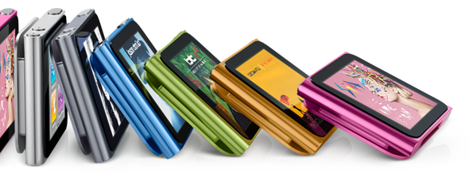

Muzica se simte altfel.
iPod nano a fost complet reproiectat cu Multi-Touch - aceeaşi tehnologie care face ca iPhone, iPad şi iPod să fie atât de grozave. Acum e de două ori mai mic şi mult mai uşor de folosit. Iar tot ceea ce vrei să asculţi e la o atingere distanţă.
Dă culorile mai tare.
Cu un design suplu din aluminiu eloxat şi şapte culori intense, iPod nano se afirmă puternic: cu siguranţă, eşti gata de distracţie
Pixeli care vibrează.
Dă-te mare cu grafica albumelor tale, cu fotografii şi cu wallpaper-ul asortat pe ecranul color de 1,5 inchi, cu rezoluţie de 240x240 pixeli. Este mic dar uluitor.

Prinde-l şi dă-i drumul.
Noua clemă încorporată te ajută să te mişti în ritmul muzicii. Trebuie doar să-ţi prinzi iPod nano de mânecă, jachetă sau geantă. Şi oriunde mergi, melodiile tale favorite sunt exact unde le vrei.
Conectează distracţia.
Conectorul cu 30 de pini încorporat îţi poate conecta uşor iPod-ul nano la sistemul de boxe din maşină, la difuzoarele de acasă şi la multe alte produse făcute pentru iPod.
Pe măsura degetelor tale.
iPod nano este cu 46% mai mic, cu 42% mai uşor şi 100% proiectat pentru muzică cu Multi-Touch. Are mărimea perfectă pentru atingeri şi alunecări, deci vârfurile degetelor tale se vor simţi în largul lor.